Şarkı Sözleri ve Müzikleri
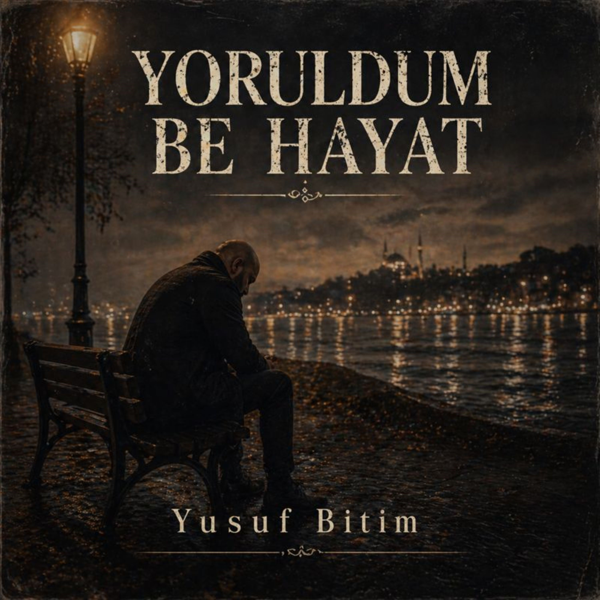
Yoruldum Be Hayat
Müzik: AI
Yoruldum ey hayat, yükün ağır sinemde Tebessüm emanet, hicran var her nefesimde Koştum yıllar boyu ben, kaldım yine hederde Bir an sükûn diledim, keder çıktı kaderde Yoruldum ey hayat, biraz dur dinleneyim Bu dil kaç ah söyler, ben kime inleyeyim Bir ümit ektim kalbe, yeşermedi neyleyeyim “Gün doğar” derler amma, ben gecede, gecedeyim Kalabalık içinde, yalnızlık yâr olmuş Feryâdım göğe yükselir, şehir bile sağır olmuş Bir omuz aradım ben, talih bana dâr olmuş Gidenler geri dönmez, her şey bana hâr olmuş Nice defa düştüm ben, tutan olmadı elimden Bir nebze huzur diledim, çaldılar gönlümden Ne hayâl kaldı artık, ne de eski ben içimden Bir garip yolcu oldum, geçerim kendi içimden Yoruldum ey hayat, biraz dur dinleneyim Bu dil kaç ah söyler, ben kime inleyeyim Bir ümit ektim kalbe, yeşermedi neyleyeyim “Gün doğar” derler amma, ben gecede, gecedeyim
▶ YouTube'da Dinle 🎵 Spotify'da DinleHIRSIZ
Müzik: AI
Senin bakışların, Sessiz bir hırsız gibi. Bir kere değdi gözlerime, Tüm ömrümü çaldı. Kalbim ilk kez böyle, Kontrolsüz atıyor. Sanki her şey sende, Bende bir şey kalmıyor. Bir adım daha atsam sana, Dönüşüm yok artık anla. İyi ki gözlerin, İyi ki gözlerime değdi. Bir anlık mucize gibi, Koca bir ömre değdi. Kayboldum o gözlerinde, Bulamam kendimi bir daha. Geceye karışsa sesin, Yine de duyarım seni ben. Kaybolsam da kendimde, Yolum çıkar hep sana yeniden. İyi ki gözlerin, İyi ki gözlerime değdi. Bir anlık mucize gibi, Koca bir ömre değdi. Geceye karışsa sesin, Yine de duyarım seni ben. Kaybolsam da kendimde, Yolum çıkar hep sana yeniden.
▶ YouTube'da Dinle 🎵 Spotify'da DinleDEM
Müzik: AI
İçimdeki vaveyla ulaştı göğe, Gökyüzü ikiye ayrıldı üzüntüsünden. Ay, gece düştü yere, Yeryüzü ağladı hicabından. Tüm okyanuslar göğe ağladı, Aslında her gözyaşının adı, Yusuf’tu. Ah dem bu dem, Anlatılmaz bir hikâye. Yaşandı ve bitti, Elde, avuçta kalmadı ne çare. Sen benden gidince, İçimdeki çocukta, benden gitti. Şimdi hem sensizim, hem de bensizim. Ölmedim ama, canımdan can gitti. Öyle bir hale getirdin ki beni, Çıkmıyor artık ağzımdan, Sana dair hiç bir kelam. Olur da, yolda denk gelsek bile, İçin rahat olsun, Vermem sana asla selam. Ah dem bu dem, Anlatılmaz bir hikâye. Yaşandı ve bitti, Elde, avuçta kalmadı ne çare. Uğrama kentime, sakın uğrama, Yıkılır duvarlarım, güllerim solar. Gelme üstüme, daha gelme, İstanbul, seni de beni de yorar.
▶ YouTube'da Dinle 🎵 Spotify'da Dinle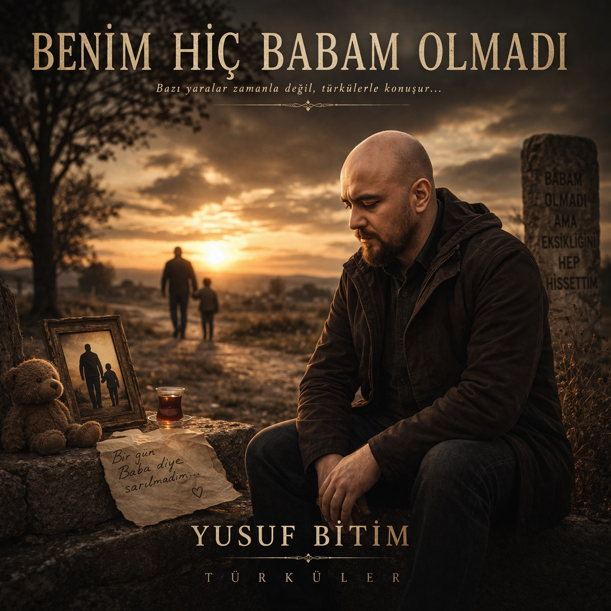
BENİM HİÇ BABAM OLMADI
Müzik: AI
Annemi emanet edip, Gözümü arkamda bırakmayacak, Ellerini tuttuğumda gurur duyacak, Sırtımı yasladığımda güven duyacak, Çınar bildiğim, Kol kanat gerecek bir babam olmadı. Düştüğümde kaldıracak, Dokunuşuyla, dizimdeki yarayı unutturacak, Yerden kaldırıp, omuzlarına alacak, Omzunu bildiğim, bir babam olmadı. Bayram geldiğinde, Düşen boynumu kaldıracak, Elini öpeceğim ve liman bildiğim, Sığınacak bir babam olmadı. Akan gözyaşlarımın adını taşıyacak, Gülüşlerimin sebebi olacak. Ağladığında benden gizlenecek, Bir babam olmadı. Aslında benim hiç babam olmadı.
▶ YouTube'da Dinle 🎵 Spotify'da DinleVATAN SAĞ OLSUN
Müzik: AI
Anam gitsin, babam gitsin, Yarim kaldı, oda gitsin. Bıraksınlar beni burda, Vatan diye canım gitsin... Toprak beni bağrına alsın, Adım rüzgârlarla kalsın. Bir selam yolla memlekete, Anam bilsin, oğlu sağ olsun Ağlama anam, dik dursun başın, Şehitler yurdu bu dağlar taşın. Bir can verdim, bin can olsun, Vatan sağ olsun. Vatan sağ olsun Anam gitsin, babam gitsin, Yarim kaldı, oda gitsin. Bıraksınlar beni burda, Vatan diye canım gitsin...
▶ YouTube'da Dinle 🎵 Spotify'da Dinle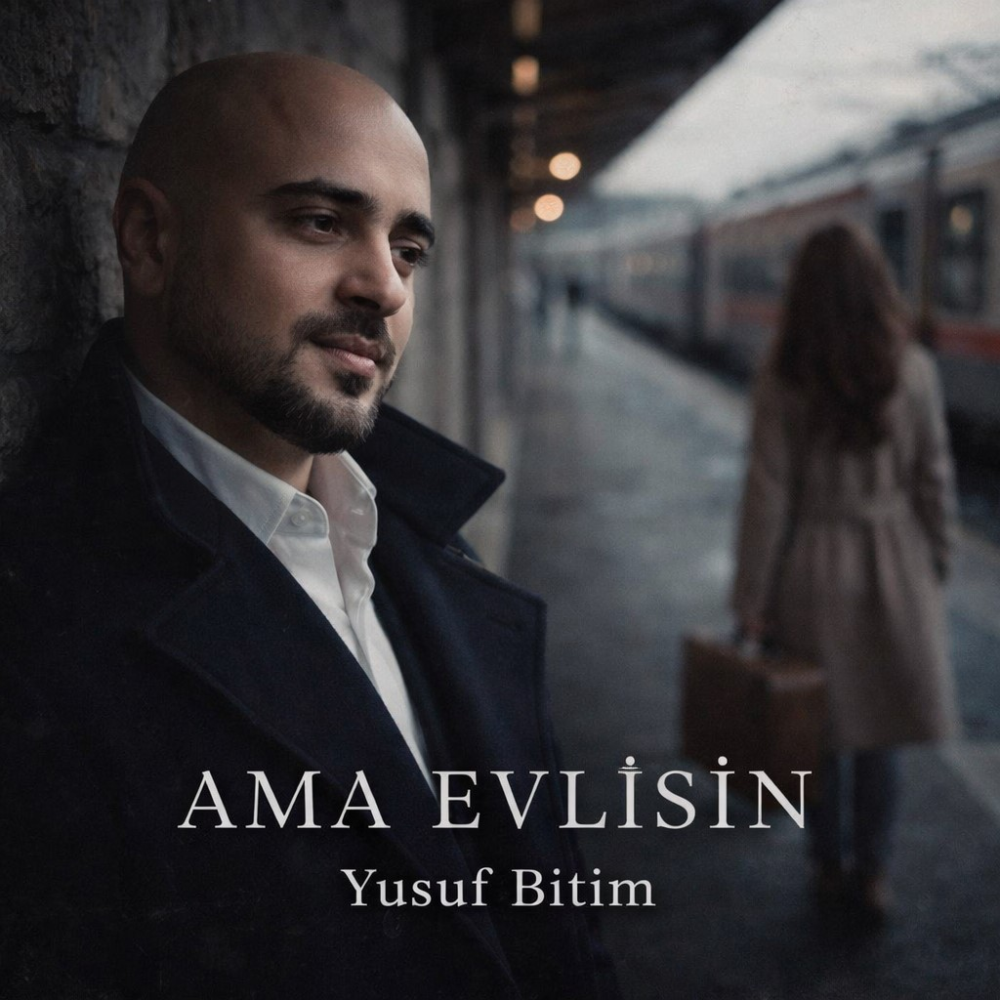
AMA EVLİSİN
Müzik: AI
Tam seni unuttum derken, Gözlerim gözlerinle kesişince, aklıma geldin. O an fark ettim, Hâlâ ilk gün ki gibi, kalbimdesin. Meğer hâlâ, içimde yangın yeriymişsin. Gözlerini tekrar görmemeliydim, Ellerim, ardından ellerine uzanıyor. Ama tutamam, sarıp sarmalayamam seni, Çünkü sen evlisin. Ciğerim yanıyor, Sen başka kolları sarıp yürürken, Bense ayrılık yolunda, yalnız yürüyorum. Sen benden başkasını yâr diye severken, Bense yerine bir başkasını hiç koyamıyorum. Ciğerim yanıyor, Sen başka kolları sarıp yürürken, Bense ayrılık yolunda, yalnız yürüyorum. Sen benden başkasını yâr diye severken, Bense yerine bir başkasını hiç koyamıyorum.
▶ YouTube'da Dinle 🎵 Spotify'da DinleYILLAR
Müzik: AI
Saatler sustu bende, takvimler yalan söyler. Aynaya baktığımda her gün, tanıyamam gözlerimi. Bir gün anladım ama çok geç oldu, Geçen zaman değilmiş, benmişim kayıp olan. Yıllar geçti, derdi verdi geçti. Yıllar geçti, gönlümü deldi geçti. Zaman dediğin şey, sessiz bir hırsız, Ne aldıysa benden, geri vermedi. Bir ömür harcadım, değmezmiş meğer. Peşinden koştuğum her şey bir keder. Dün diye sarıldım, yarın diye bekledim, Bugün elimden kaydı, fark etmedim. Koştum, yetişemedim. Sevdim, yetemedim. Her şeyi verdim ama Kendime hiç gelemedim. Gülüşüm eskidi, aynalar sustu. İçimde bir çocuk vardı, o da yoruldu. Her "Tamam" dediğim yer, yeniden başladı, Ben bitiyorum sandım, acılarım çoğaldı. Düşler kurdum ama uyanmak ağırdı. Her sabah aynı yük, aynı karanlıktı. Ben hep yarına bıraktım kendimi, Bugün geldi geçti, ben hazır değildim. Hayat, bana ne yaptın söyle, Daha başındaydım, nasıl bittin böyle. İçimde umut vardı, bir bir söndü. Ben büyüdüm sandım, meğer içim öldü. Koştum, yetişemedim. Sevdim, yetemedim. Her şeyi verdim ama Kendime hiç gelemedim.
▶ YouTube'da Dinle 🎵 Spotify'da Dinle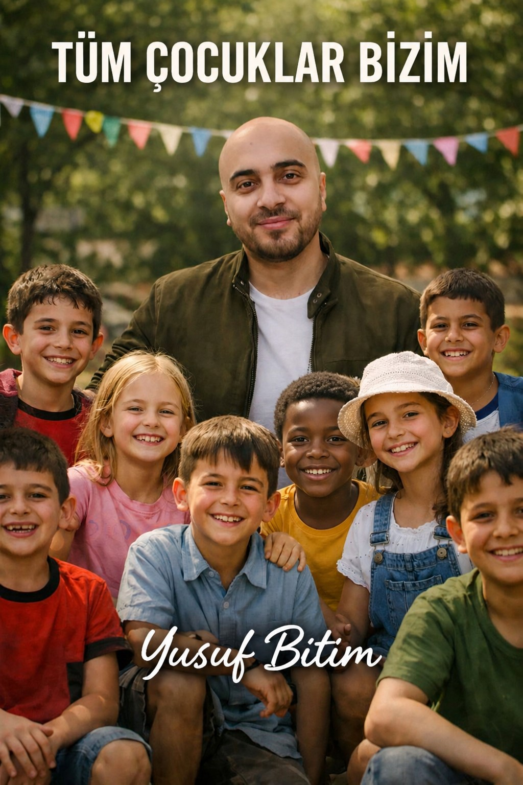
TÜM ÇOCUKLAR BİZİM
Müzik: AI
Çocuklar bizim, emanet bize Bir gülüş yeter, onlara umut vermeye Tutalım ellerinden düşmeden önce Sevgiyle büyüsünler, korkmadan önce Küçük kalpler kırılmasın diye Sessiz çığlıklar duyulsun diye Bir adım atsak yeter aslında Çünkü bir hayat değişir, biz dokunduğumuzda Çocuklar bizim, emanet bize Bir gülüş yeter umut vermeye Tutalım elinden düşmeden önce Sevgiyle büyüsün, korkmadan önce Bir bakışta, kim bilir gizli nice dert Görmezsek olur mu, olur mu dert? Bir sözümüz ışık olabilir Karanlıkta bile yollarını bilir Unutma, bir çocuk yalnızsa Dünya eksik kalır aslında Sevgi varsa her kalpte Hiçbiri kaybolmaz bu yolda Çocuklar bizim, emanet bize Bir gülüş yeter umut vermeye Tutalım elinden düşmeden önce Sevgiyle büyüsün, korkmadan önce
▶ YouTube'da Dinle 🎵 Spotify'da DinleİLAHİ ADALET
Müzik: AI
Sakın gelme şehrime, Çok üzgünüm bu aralar. Kokun gelirse olur da burnuma, Beni çok yaralar. Selamın bile, zoruma gider. Hak etmedim ben bu ayrılığı. Sana aşk düşerken, Bana ayrılık düşmeyecekti. Öyle bir gittin ki, Ayak izlerin utansın geri dönmeye. Öyle bir gittin ki, Dönmeyi düşündüğün an, Can at ölmeye. Sana şiir yazdığım kalemler kırılsın. Üzerinde adın yazan tüm kâğıtlar yırtılsın. Öyle ezdin ki yüreğimi, öyle üzdün ki beni, Her mezar adına kazılsın. Gönlümdeki yaralarda adın yazıyor. Dilimdeki ahı duy, sadece adın geçiyor. Artık bende, nazın hiç geçmiyor, Bana yaptığını, dilerim sende bul.
▶ YouTube'da Dinle 🎵 Spotify'da DinlePERİŞAN HALDEYİM
Müzik: AI
Yüreğine karlar düşünce Güneş gözlerinde üşüyünce Gönlüm gönlünden düşünce Dedim ki: halim yaman Perperişan görünüp de Parça parça bölünüp de Diri diri gömülüp de Ölen var mı benim gibi? Uzaklara, çok uzaklara gidince Beni değil sensizliği götürünce Bir ben kaldım yarım kalan içimde Söyle, ölen var mı benim gibi? Uzaklara, çok uzaklara gidince Beni değil sensizliği götürünce Bir ben kaldım yarım kalan içimde Söyle, ölen var mı benim gibi?
▶ YouTube'da Dinle 🎵 Spotify'da Dinle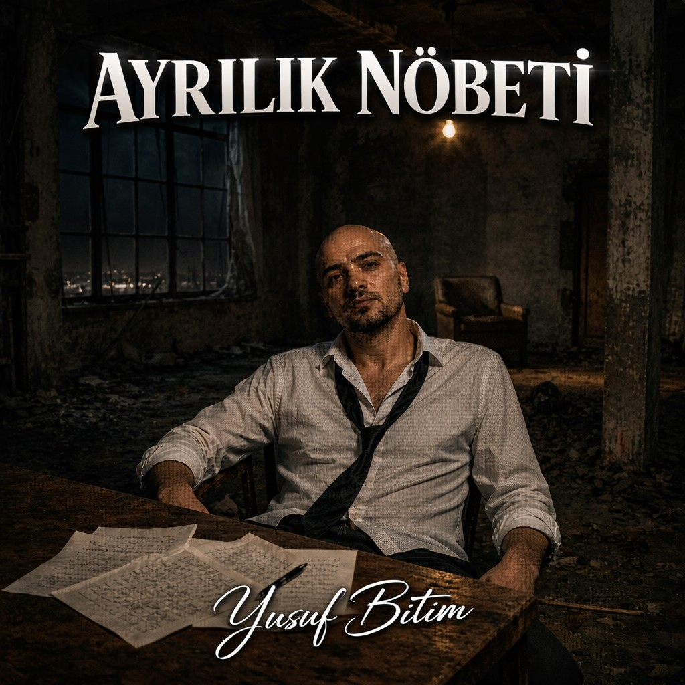
AYRILIK NÖBETİ
Müzik: AI
Her gecenin yarısında, Ayrılık nöbetindeyim. Gözlerim yorgun ve kapıda, Umudun gölgesindeyim. Gel, damla damla hasretin, Yaş diye, düşer gözlerimden. O an içimdeki çocuk ölür, Hüzün doğar bana yeniden. Anılarımın hatırı kalmışsa, Bir geceni ömrüme say, hiç olmazsa Halime üzül biraz da olsa, Güneş doğana kadar, yanımda kal.
▶ YouTube'da Dinle 🎵 Spotify'da Dinle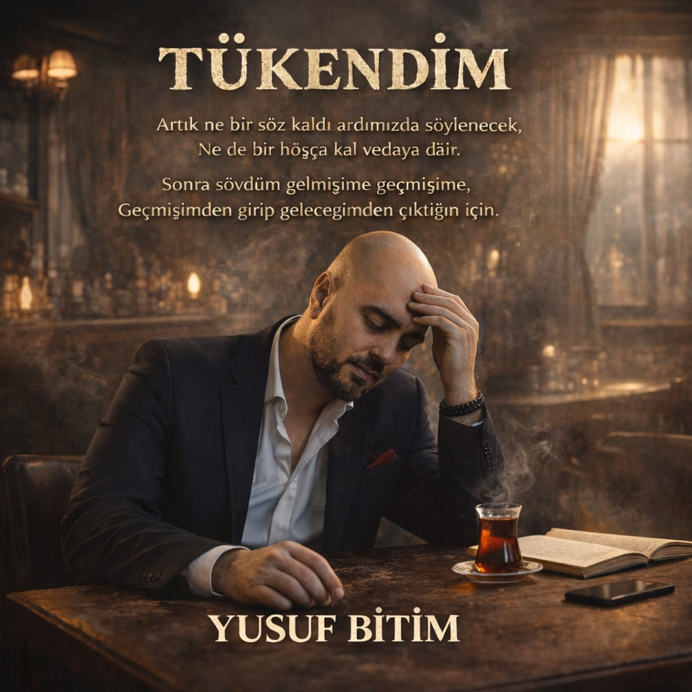
TÜKENDİM
Müzik: AI
Her bir şiirin dibine vurasım var bu gece, Birinde benden, diğerinde senden gidesim var. Şiirlere batıp batıp çıkasım var bu gece, Birinde boğulup, diğerinde ölesim var. Bir de bakmışsın kış düşmüş yanaklarıma, Üşümüşüm, ayaklarım buz tutmuş. Tutunacak bir el bulamayıp, Hasretine düşmüşüm. Gözümün nuru, ne fark eder ki bir ya da bin yara? Sen dilediğince aç gönlümde yara. Hasretin hepsinden daha ağır nasıl olsa! Özler özler dururum seni, ölüm yok ya ucunda! Artık ne bir söz kaldı ardımızda söylenecek, Ne de bir hoşça kal vedaya dair. Sonra sövdüm gelmişime geçmişime, Geçmişimden girip geleceğimden çıktığın için.
▶ YouTube'da Dinle 🎵 Spotify'da Dinle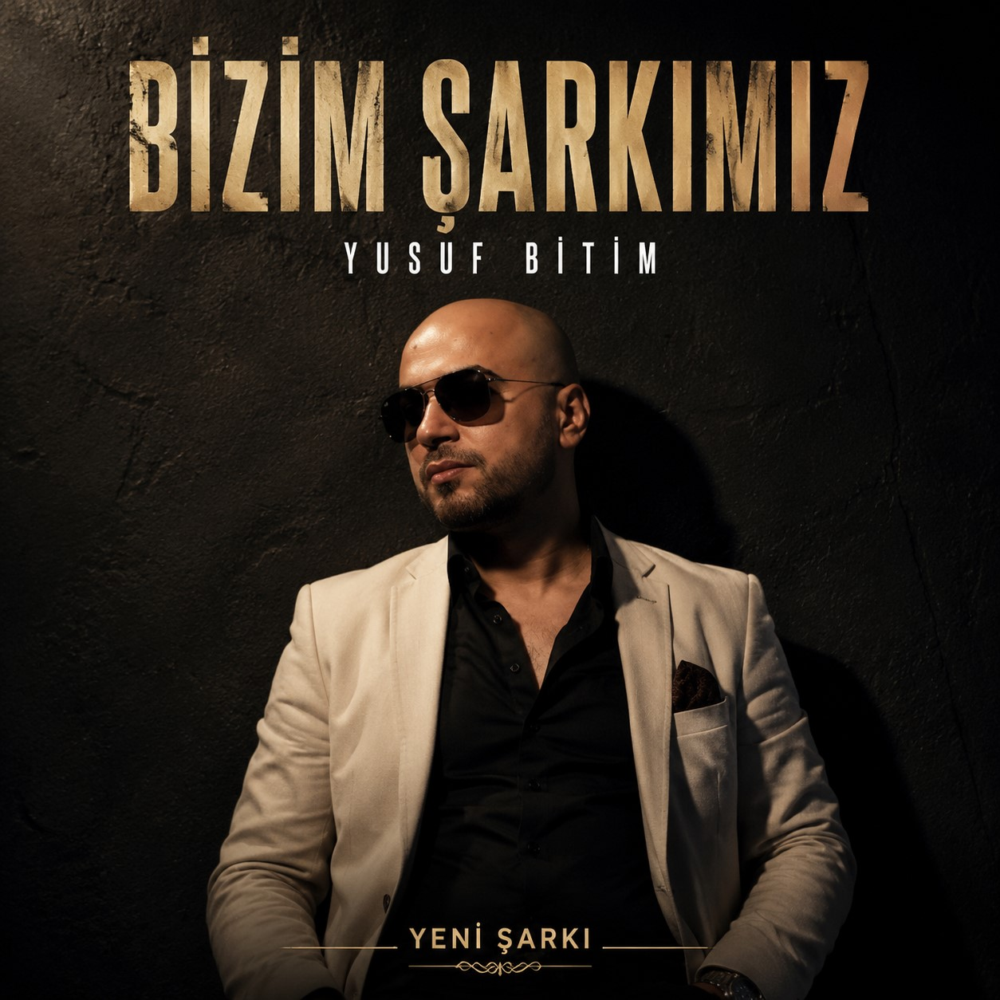
BİZİM ŞARKIMIZ
Müzik: AI
Dudağımda kalsın, dudak izlerin, Aşk diye canım, yansın içimiz. Kulağımda kalsın ayak seslerin, Bir ömür canım, geçsin içimiz. Yalnızlığımın sonu, mutluluğumun başı, Hoş geldin aşkın adı, başımın tacı, Bana herkes fazla, bir tek sen azsın, Rab'bim seni bana ömürlük yazsın. Aşk rengini senden almış, Güller gülüşünde kalmış, Dudağında kahve izi, Bana kırk yıl hatır bırakmış. Yalnızlığımın sonu, mutluluğumun başı, Hoş geldin aşkın adı, başımın tacı, Bana herkes fazla, bir tek sen azsın, Rab'bim seni bana ömürlük yazsın. Aşk rengini senden almış, Güller gülüşünde kalmış, Dudağında kahve izi, Bana kırk yıl hatır bırakmış. Yalnızlığımın sonu, mutluluğumun başı, Hoş geldin aşkın adı, başımın tacı, Bana herkes fazla, bir tek sen azsın, Rab'bim seni bana ömürlük yazsın.
▶ YouTube'da Dinle 🎵 Spotify'da Dinle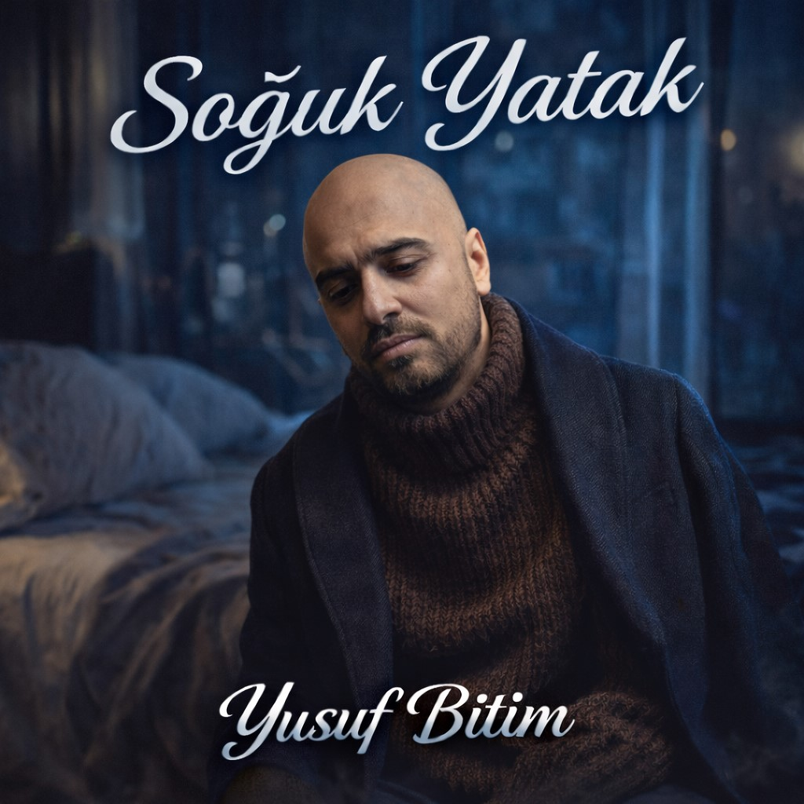
SOĞUK YATAK
Müzik: AI
Yatağımın sol yanı boş ve soğuk, Gecenin bir vakti gel, uyuyamıyorum. Sabaha çok var, dayanamıyorum. Hava karanlık ve boğuk, Nefes alamıyorum. Sustu gönlüm, daha susacak. Zaman sensiz, durdu duracak. Anılar çok acımasızdır, Beni yerden yere vuracak. Gitmesen, iman bilsem gözlerinin kıyısını, Tam gözlerine yaslansam. Tüm soluğumu harcayıp, Gözlerinde yaşlansam. Boğazıma kadar sen doluyken, boğuluyorum. Çırpındıkça dibe batıyorum, yoruluyorum. Aşk barış demektir, ayrılık savaştır, Ben savaşın tam ortasında, Kalbimden vuruluyorum.
▶ YouTube'da Dinle 🎵 Spotify'da Dinle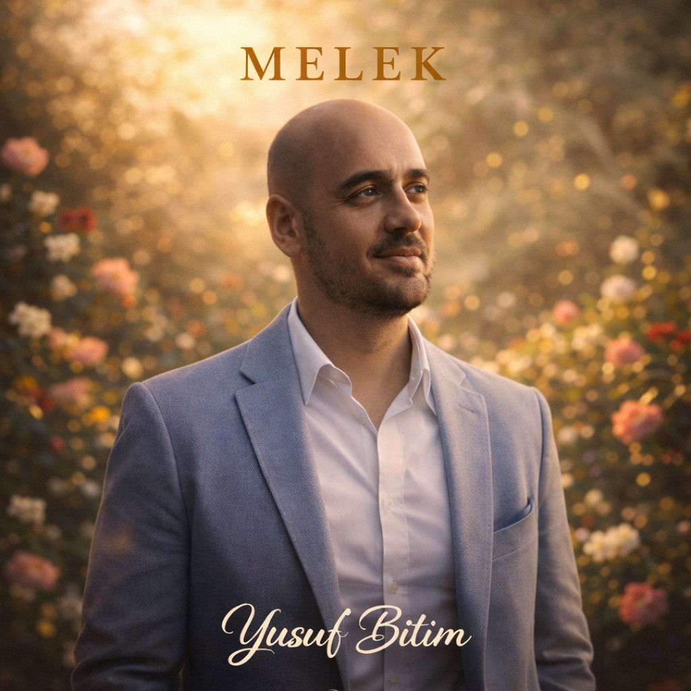
MELEK
Müzik: AI
Bir gül, bir karanfil ve bir de papatya, Gülüşün, bakışın ve dudakların var ya, Nasıl da güzel duruyorlar, şükür Mevla'ma. Böylesine bir güzellik, sanmam gelsin dünyaya. İç kavurucu bakışlarla bakma bana, yanarım. Seni melekler getirmiş dünyaya sanırım. Seni gördüm göreli, bilmem ben kimim a canım, Aklımı aldın, içimi yaktın sen ey güzel. Gözlerin deniz mavisi, saçların altın sarısı, Sadece bir gülüşün, eder ömrümün yarısı. Gitme, yokluğunun ömrüme yok hiç faydası. İç kavurucu bakışlarla bakma bana, yanarım. Seni melekler getirmiş dünyaya sanırım. Seni gördüm göreli, bilmem ben kimim a canım, Aklımı aldın, içimi yaktın sen ey güzel.
▶ YouTube'da Dinle 🎵 Spotify'da Dinle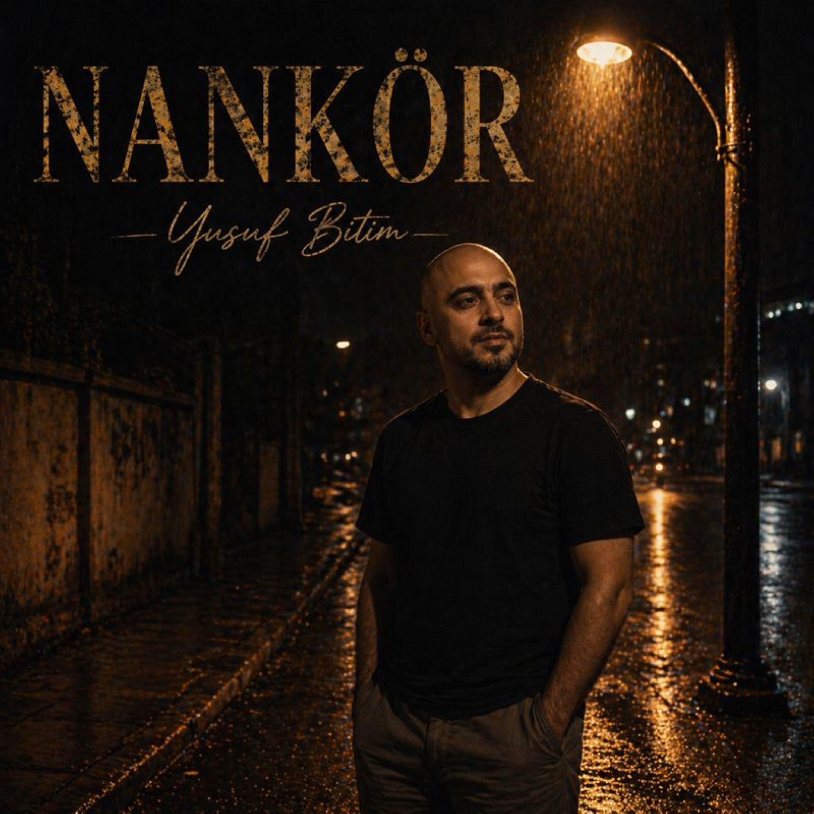
NANKÖR
Müzik: AI
Sana ait bir şey kalmadı elimde, Bundandır bütün yoksulluğum. Hâlbuki bir gülüşün, bir de sözün, Zenginlik katardı bütün ömrüme. Sen nasıl bir bahardın, Yanındayken üşüyordum. Meğer koca bir yalandın, Seninle doğruyu hiç bulamıyordum. Senden kimseye, kötü bahsetmedim, Bu demek değil, sana ah etmedim. Başkasının bilmesine gerek yok, Ben seni hiç bir zaman affetmedim. Sen nasıl bir bahardın, Yanındayken üşüyordum. Meğer koca bir yalandın, Seninle doğruyu hiç bulamıyordum.
▶ YouTube'da Dinle 🎵 Spotify'da Dinle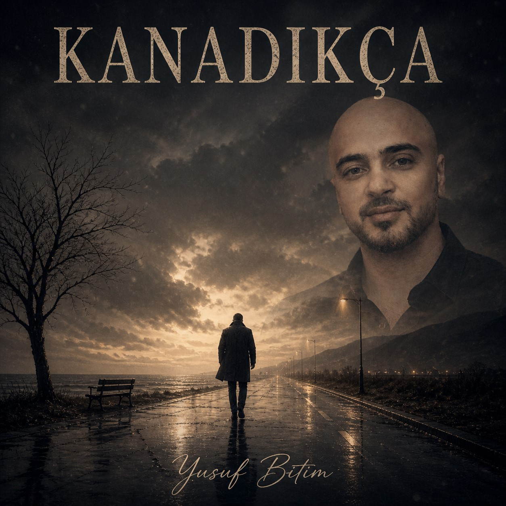
KANADIKÇA
Müzik: AI
Önce gönlünden, Sonra sözlerinden Ve usul usul gözlerinden Vazgeçip gidiyorum. Artık hayallerim, Ağır gelmiyor bana, Çünkü sen yoksun, Artık bende. Onca zaman yanında, Bir yara gibi, kanadım durdum. Kanadım sustum, Kanadım küstüm. Sabahlarım da geceden kalma değil, Gecelerim artık, Sessiz hiç değil. Ben sensizliğin bedelini, Çoktan ödedim, Bu vebal değil, ah hiç değil. Onca zaman yanında, Bir yara gibi, kanadım durdum. Kanadım sustum, Kanadım küstüm. Aldanma suskunluğuma, Susmalarım yas değildir. Susmalarım gözyaşı değildir. Sustum, çünkü bitti her şey. Ben sensizliğin hesabını kestim çoktan Ne vebal kaldı, ne de bir isyan. Onca zaman yanında, Bir yara gibi, kanadım durdum. Kanadım sustum, Kanadım küstüm.
▶ YouTube'da Dinle 🎵 Spotify'da DinleNEDEN
Müzik: AI
Yanımda sen olsaydın. Beni neden yok saydın. Gün saydım, ay saydım. Yalanmış, bana gelirsin sandım. Yerim olmadı, yerin dolmadı. Aşk iki kişilikmiş, tek hiç olmadı. Yalnız bıraktın, yarınsız bıraktın, Bana bu yaptığın hiç olmadı. Hiç olmazsa bari, Geceleri gel düşüme, Ama sakın yanımda üşüme. Çünkü ben çok üşüyorum, Ve hep seni düşünüyorum. Yolcu yolunda gerek yar, Sen sağ ben selamet. Büyük bir felaketin, Başlangıcıdır bu alamet.
▶ YouTube'da Dinle 🎵 Spotify'da Dinle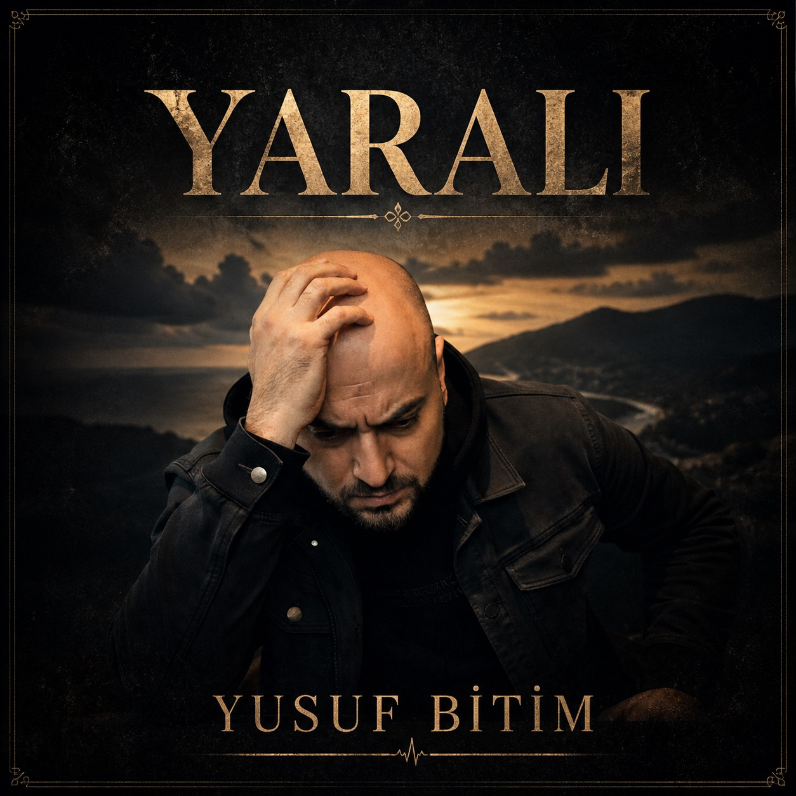
YARALI
Müzik: AI
Sen gitmekte kararlı, Ben geride kalan bir zavallı. Senindir bu ayrılığın vebali, Bense masum ve yaralı. Nereye dönsem anıların var. Nereye gitsem hasretin var. Dermanı yok derdimin, Nereye dönsem acın var. Sensizliğe güç yeter mi? Bana bıraktığın acı diner mi? Ateşten gömlek giymişim, Ayrılık yangını söner mi? Güvendiğim dağlarıma, karın yağdı. Meğer aşkın alevde samandı. Ateş var, kor var fakat haberin yok. İçinde sen olan, kalbim yandı. Yaramı sar diye gelmiştim sana, Bir yara da sen aç diye değil, Umutlar biriktirip gelmiştim sana, Benden git diye değil. Sensizliğe güç yeter mi? Bana bıraktığın acı diner mi? Ateşten gömlek giymişim, Ayrılık yangını söner mi?
▶ YouTube'da Dinle 🎵 Spotify'da DinleGÖNLÜMDEKİ NUR
Müzik: AI
Gönlümde bir ışık doğar, Adın geçince ey Nebî Kalbim sana doğru akar, Hasretinle dolu gibi Salât sana, selâm sana Ey Muhammed Mustafa Yolun bize rehber olsun Kalpler bulsun hep huzuru Gece çöker, seni anarım Gözlerimde dua ile Adınla huzur bulurum Rahmet iner kalbime aşk ile Salât sana, selâm sana Ey Muhammed Mustafa Sevgin düşmez dilimizden Hep sen ol bizim yanımızda Güller açar izlerinde Her sözün bir hikmettir Adın düşse gönüllere Her dert anında bitmiştir Yetimlerin sığınağı Mazlumların umudu Senin güzel ahlâkınla Aydınlanır her yolu Salât sana, selâm sana Ey Muhammed Mustafa Aşkınla yanar kalbimiz Sensin bizim hep duamızda Bir gün sana varır mıyız Özledik seni ey canımız. Gözyaşımız armağandır Düşer secdeye secdeye Şefaatin bize nasip olsun Ne olur mahşer gününde Adını anan diller var Sevdan her bir gönülde Salât sana, selâm sana Ey Muhammed Mustafa Yolunda dursun kalbim Bırakma bizi asla
▶ YouTube'da Dinle 🎵 Spotify'da DinleSON PERDE
Müzik: AI
Bu son perdeydi, açıldı işte. Bitirdin her şeyi bu gidişinle. Bir yalana daha tahammülüm yok, Gözümden ve gönlümden düştün işte. Âşığın gözü körmüş, yanında kördüm. Yalanlarını bile hep doğru gördüm. İnince gözlerimden bu son perde, Aramıza kalın duvarlar ördüm. Gelme, duvarlarım kalın aşamazsın. Yalan üstüne yalan, daha koyamazsın. Sana o kadar inandığıma say, Gelme, artık beni kandıramazsın. Aşka eylem gerek, sözler yetmiyor. Son pişmanlık, artık fayda etmiyor. Kalp kırılınca, güven bitince, Yapılanlar asla kâr etmiyor. Gelme, duvarlarım kalın aşamazsın. Yalan üstüne yalan, daha koyamazsın. Sana o kadar inandığıma say, Gelme, artık beni kandıramazsın.
▶ YouTube'da Dinle 🎵 Spotify'da DinleUNUTMA
Müzik: AI
Gönlün yoksa gönlümde, Eğlenme sakın gönlümle. Sonra umudum kırılır, Güvenim yıkılır. Unutma; her gönlün bir sahibi vardır. Ben ah etmesem de, sana hiç bir gün, Kırık kalplerin sahibi, elbet hesap sorar bir gün. Gelip geçici değildir, "Seni Seviyorum" sözü. Bugün söyleyip, Yarın yitiremezsin. Bugün var olup, Yarın bitiremezsin. Ahımı alma, Bu kalbim sana emanet, Etme sakın bana ihanet. Ya kal ömürlük yanımda, Ya da şimdi git. Ahımı alma, Bu kalbim sana emanet, Etme sakın bana ihanet. Ya kal ömürlük yanımda, Ya da şimdi git. Ahımı alma, Bu kalbim sana emanet, Etme sakın bana ihanet. Ya kal ömürlük yanımda, Ya da şimdi git.
▶ YouTube'da Dinle 🎵 Spotify'da DinleGÖNLÜMDEKİ NUR
Müzik: AI
Gönlümde bir ışık doğar, Adın geçince ey Nebî Kalbim sana doğru akar, Hasretinle dolu gibi Salât sana, selâm sana Ey Muhammed Mustafa Yolun bize rehber olsun Kalpler bulsun hep huzuru Gece çöker, seni anarım Gözlerimde dua ile Adınla huzur bulurum Rahmet iner kalbime aşk ile Salât sana, selâm sana Ey Muhammed Mustafa Sevgin düşmez dilimizden Hep sen ol bizim yanımızda Güller açar izlerinde Her sözün bir hikmettir Adın düşse gönüllere Her dert anında bitmiştir Yetimlerin sığınağı Mazlumların umudu Senin güzel ahlâkınla Aydınlanır her yolu Salât sana, selâm sana Ey Muhammed Mustafa Aşkınla yanar kalbimiz Sensin bizim hep duamızda Bir gün sana varır mıyız Özledik seni ey canımız. Gözyaşımız armağandır Düşer secdeye secdeye Şefaatin bize nasip olsun Ne olur mahşer gününde Adını anan diller var Sevdan her bir gönülde Salât sana, selâm sana Ey Muhammed Mustafa Yolunda dursun kalbim Bırakma bizi asla
▶ YouTube'da Dinle 🎵 Spotify'da Dinle
ÇILDIRAYIM MI?
Müzik: AI
Aklıma geldi, gidişin yine Bu kadar vicdansızlığın, söyle niye Değme gönlüme, konuşmaz kimseyle Sağır ve lal yüreğim, gelir mi dile Çaresizler çaresizliğine, sen giderken düştüm Senden sonra inan, herkese küstüm Yaşanmaz acılarla, baharı süzdüm Olmadı olmuyor, sensiz olmuyor Yollarına bakıp ağlayayım mı? Hayaline dalıp boğulayım mı? Sensiz bu canıma saldırayım mı? Gel artık sevdiğim çıldırayım mı? Çıldırayım mı? Kapılar, ardına kadar açık Ellerim yüzümde, yüzüm yere bakık Dolar da gözlerim, gören bilmez halimi Bana öylece bakarlar, kaşları çatık Yollarına bakıp ağlayayım mı? Hayaline dalıp boğulayım mı? Sensiz bu canıma saldırayım mı? Gel artık sevdiğim çıldırayım mı? Çıldırayım mı?
▶ YouTube'da Dinle 🎵 Spotify'da Dinle
GEÇMİYOR İZİN
Müzik: AI
Ben, hâlâ adını saklıyorum Gittin diye değil, sensizliğe yanıyorum Kalbim kırık ama seni silemiyorum Her gece içimde seni yaşıyorum Bir zamanlar her şey sendin Şimdi adın dilime ağır geliyor Gözlerimde kalan izlerin Her gece yeniden doğuyor Geceler uzun, sensizlik daha uzun, Bir adım atsan, belki çözülür bu düğüm. Yaşayan bilir, acılar en çok geceyi sever, Sen gelmezsen, gelecek bana ölüm. Bir iz bıraktın bana, hiç geçmeyen. Ne zaman silsem, yazılır yeniden. Sana döner bütün yollarım, Kaçsam bile senden. Bitmiyor içimde sana kalanlar, Silmiyor zaman, ne yapsam yalan. Gidiyorsun ama izlerin burada, Ben senden hâlâ gidemiyorum Geceler uzun, sensizlik daha uzun, Bir adım atsan, belki çözülür bu düğüm. Yaşayan bilir, acılar en çok geceyi sever, Sen gelmezsen, gelecek bana ölüm.
▶ YouTube'da Dinle 🎵 Spotify'da Dinle
GÖNÜL BAHÇEM
Müzik: AI
Bir derdim var, Sen duyarsan bin olur, Sakın duyma. Değmesin dert sana, Ben duyarsam feryat olur, Çünkü kıyamam sana. Ah kıyamam, kıyamam sana Bakmaya doyamam, doyamam sana. Ah kıyamam, kıyamam sana, Sensiz kalamam anlasana. Ben, seni severken kayboluyorum, Benden bir şey kalmıyor, Hep sen oluyorum. Aşk tam olmaksa, Sensiz yarım kalırım. Sensizliğe hiç dayanamıyorum. Belki de dalıp dalıp gideriz düşlerimde, Sonra salıncak kurarız gönül bahçemde, Gönlümden gönlüne yolculuk var, Sakın gitme başka bir ele.
▶ YouTube'da Dinle 🎵 Spotify'da Dinle
ÇIKMAZ SOKAK
Müzik: AI
Sen gidiyorsun, gök matem siyahında Kırıldı kollarım, kaldım acılar arasında Bir kaptan misali, demir atarken yalnızlığa Biliyorum kurtuluş yok, bu ayrılık ile hasret arasında Boğazıma kadar sen doluyken, boğuluyorum Çırpındıkça dibe batıyorum, yoruluyorum Aşk barış demektir, ayrılık savaştır Ben savaşın tam ortasında, kalbimden vuruluyorum Başım sensizlik, sonum sensizlik Yolum desen, çıkmaz bir sokak Canımdan can çıkıyor da, Hiçbir yol sana çıkmıyor Sana çıkmayan yollar, hep kapalı, Ben çıkmazlardayım…
▶ YouTube'da Dinle 🎵 Spotify'da Dinle
KADINIM
Müzik: AI
Adımız aşka bulansın, Kem gözlüler utansın, Duysun herkes inadına, Sen benim kadınımsın. Dün yoktun, bugün varsın, Gönlüme artık yârsın, Tek hazinem, yarınım, Sen benim kadınımsın. Aklımın her köşesinde, Hep sen varsın artık. Ömrümün geri kalanında, Seninle sefam olsun artık. Sen, gücüme gücünü kat, Soluksuz omuzumda yat, Ayrılma asla dizimden, Ömrümü ömrünle uzat. Seninle bir ömür yalnız, Olalım hep ikimiz. Kuş olup bir an ansız, Uçalım hep ikimiz. Benim en güzel zamanım, Seninle olduğum zamandır. Senin olmadığın her anım, İnan bana hep yalandır. Adımız aşka bulansın, Kem gözlüler utansın, Duysun herkes inadına, Sen benim kadınımsın. Dün yoktun, bugün varsın, Gönlüme artık yârsın, Tek hazinem, yarınım, Sen benim kadınımsın.
▶ YouTube'da Dinle 🎵 Spotify'da Dinle